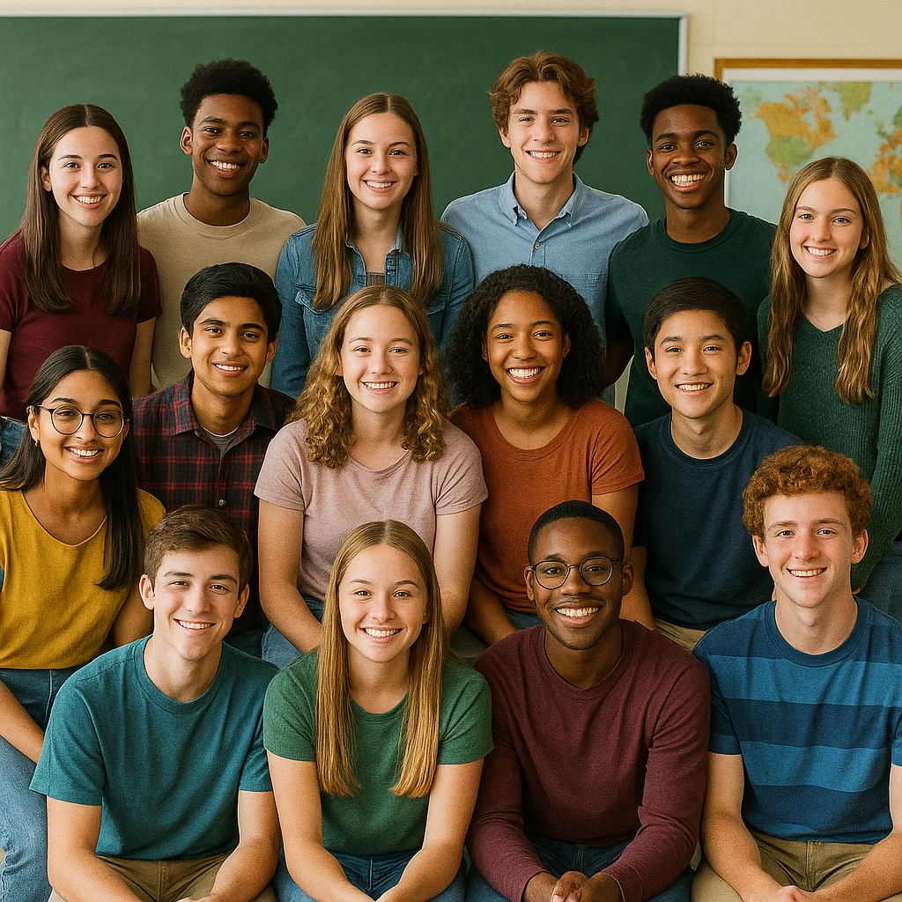

Transformando o futuro com educação
Oferecemos reforço escolar gratuito para crianças carentes. Acreditamos que o saber pode transformar vidas.
Sobre a ONG
A ONG Saber que Transforma nasceu do sonho de um grupo de professores em levar educação de qualidade a crianças em situação de vulnerabilidade social. Acreditamos que a educação é o primeiro passo para a transformação de uma realidade injusta.
Atuamos desde 2023 oferecendo aulas de reforço escolar, atividades culturais e oficinas de leitura e escrita. Com a ajuda de voluntários dedicados, conseguimos atender mais de 80 crianças por semana, ampliando seus horizontes e alimentando seus sonhos.
Reforço Escolar
Professores Voluntários
Crianças de 6 a 14 anos
Momentos que Inspiram

Junte-se a nós como voluntário!
Você pode fazer parte dessa transformação. Seja um professor, monitor ou ajudante. Toda contribuição importa!
Quero ser voluntário